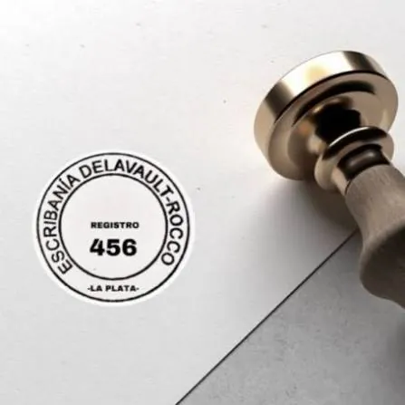
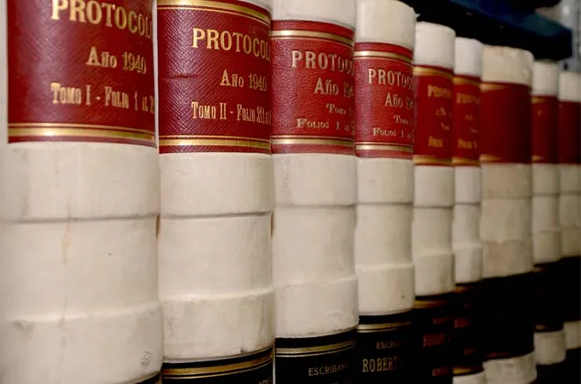
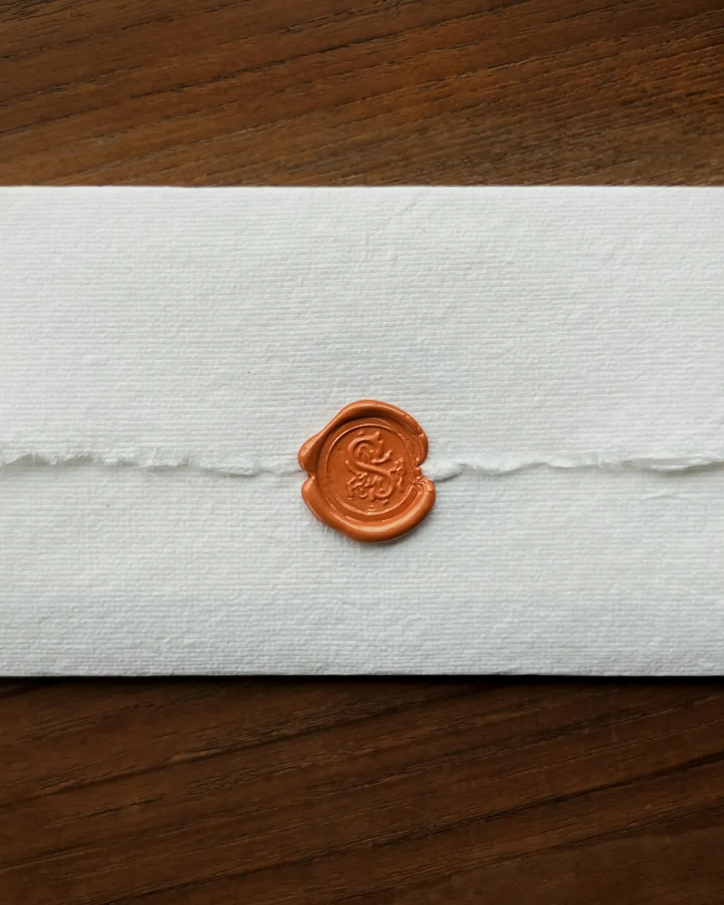
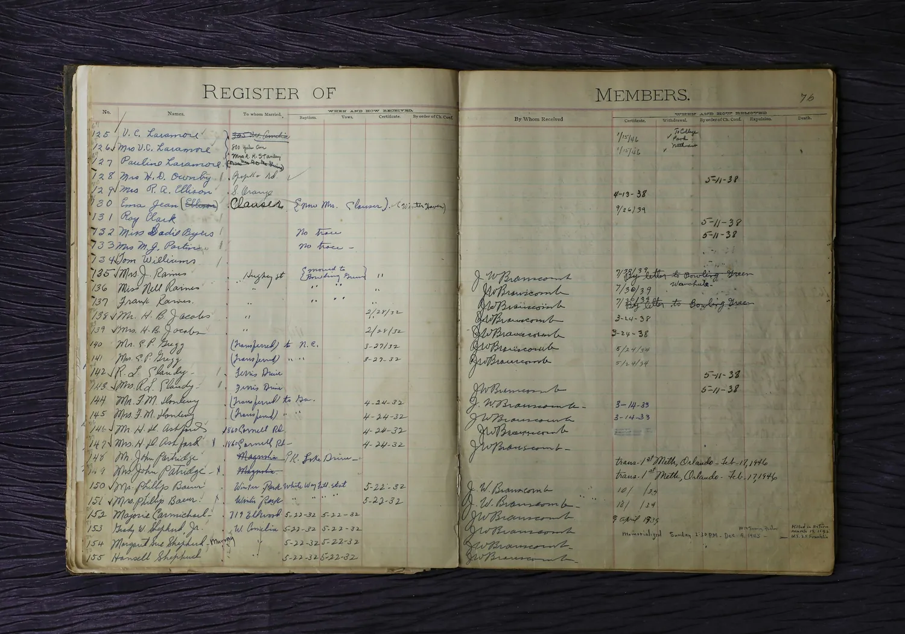
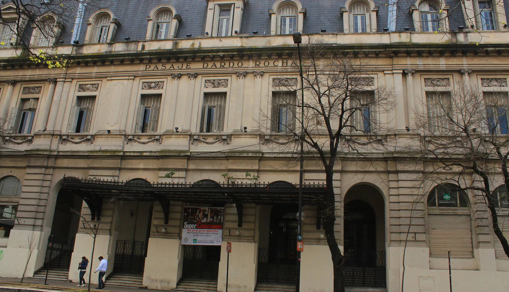
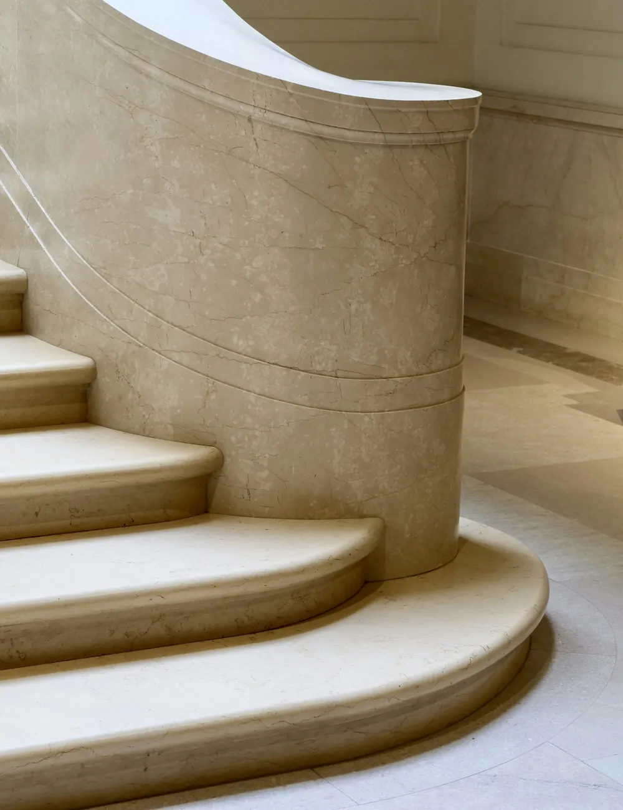

Escribanía Delavault — Rocco
Seguridad jurídica
para decisiones
importantes.
Escrituras, poderes y certificaciones en el centro de La Plata.
Realizar una consultaRegistro Notarial 456 Distrito de La Plata
Pasaje Dardo Rocha, La Plata
La escribanía
El registro 456,
en el centro
de la ciudad.
Magalí Delavault y Florencia Rocco ejercen la función notarial bajo el Registro N.º 456 del Distrito Notarial de La Plata. Cada acto se explica antes de firmarse.
- Registro
- N.º 456
- Distrito
- La Plata, Buenos Aires
- Atención
- Lun a vie, 8 a 17 h · con turno


Actos notariales
Seis actos.
Un mismo registro.
La documentación que corresponde a cada uno se define en la consulta.
-
Escrituración de la operación, con el estudio de títulos que corresponde.
Consultar por una compraventaCompraventa · fachada residencial -
Generales o especiales, para que otra persona actúe en su nombre.
Consultar por un poderPoderes · firmas al pie del instrumento -
La voluntad testamentaria instrumentada con las formalidades que exige la ley.
Consultar por un testamento
Testamento · pliego cerrado con lacre -
Transmisión de un inmueble en vida, con el análisis que ese acto requiere.
Consultar por una donaciónDonación · instrumento manuscrito -
Fe pública sobre la autenticidad de una firma en un documento privado.
Consultar por una certificaciónCertificación · cuño sobre el documento -
Otras gestiones habituales de la escribanía, a evaluar según el caso.
Contar el casoOtros actos · fichero de consulta
Compraventa de inmuebles
¿Está por comprar
o vender
una propiedad?
Antes de firmar conviene revisar títulos, condiciones y plazos. Cuéntenos en qué instancia está la operación y le indicamos qué documentación reunir.
Consultar por una compraventa- 01 Consulta
- 02 Documentación
- 03 Coordinación
- 04 Escritura
Las escribanas
Dos firmas
sobre el mismo
registro.
-
Notaria Titular
Magalí E.
Delavault -
Notaria Adscripta
Florencia
Rocco
Ambas matriculadas en el Colegio de Escribanos de la Provincia de Buenos Aires y habilitadas para autorizar los mismos actos dentro del Registro N.º 456.
Cómo trabajamos
De la consulta
al protocolo.
-
01
Contacto
Nos escribe y cuenta, en pocas líneas, qué necesita.
-
02
Turno
Coordinamos la atención en la oficina de Calle 48.
-
03
Documentación
Revisamos lo disponible y explicamos el trámite completo.
-
04
Escritura
Se otorga el acto y queda protocolizado bajo el Registro 456.


La Plata
Calle 48 N.º 845
Piso 3.º · Oficina B — entre calles 11 y 12.
Lunes a viernes, de 8 a 17 h, con turno previo.
Antes de la consulta
Cuatro
respuestas
útiles.
¿Cómo consigo un turno?
Por WhatsApp o por email, indicando el trámite que necesita. La atención es de lunes a viernes de 8 a 17 h, siempre con turno previo.
¿Qué documentación tengo que llevar?
Depende del acto. En la consulta inicial le indicamos la documentación puntual que corresponde a su trámite.
¿Qué es el Registro N.º 456?
Es el registro notarial asignado a esta escribanía por el Colegio de Escribanos de la Provincia de Buenos Aires, dentro del Distrito Notarial de La Plata. Todo acto que se otorga acá queda protocolizado bajo ese número.
¿Los honorarios se informan antes de firmar?
Sí. Se conversan en la consulta inicial, una vez que se conoce el acto a realizar y la documentación involucrada.
Consulta
Cuéntenos
qué trámite
necesita.
No hace falta saber el nombre técnico del acto. Con una descripción breve alcanza para orientarlo.
Escribir por WhatsApp- WhatsApp +54 9 221 568-1943
- Teléfono (0221) 527-3469
-
Email
escribania.delavault.rocco
@hotmail.com -
Dirección
Calle 48 N.º 845 · Piso 3.º Of. B
La Plata, Buenos Aires - Horario Lunes a viernes, 8 a 17 h
- Redes Instagram · Facebook
